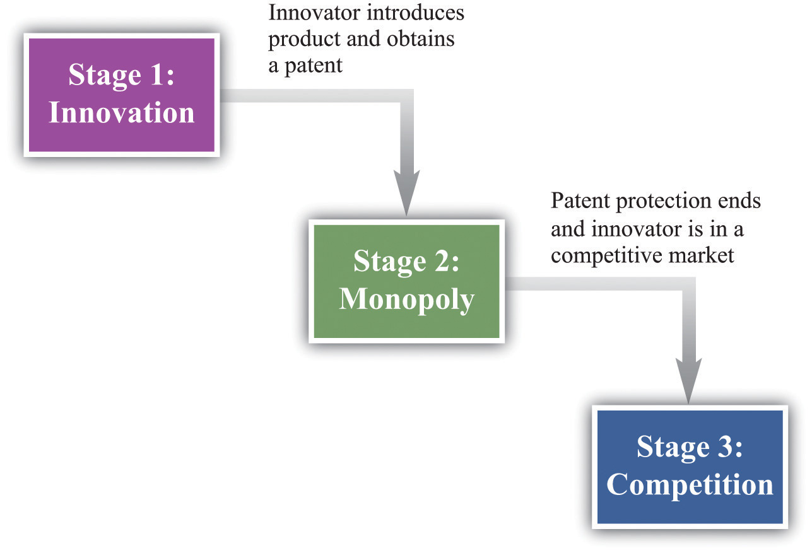

In the introduction to this chapter, we mentioned the breakup of Napster, a company that facilitated the sharing of music. Napster provided file-sharing software that allowed computer users to share music files over the Internet. A music file, like any other computer file, is simply information: a collection of bits and bytes. It costs nothing to make a copy of a music file. What Napster did, in other words, was to make it easier for music files to be distributed at marginal cost. You might think that the antitrust authorities would have been delighted. But the argument in this case was that there was an infringement of the rights of the music producers. The courts held in their favor: the law came down on the side of the monopolists. We now consider why governments sometimes actively support and promote monopolies.
To understand the Napster case, we begin by recognizing that creating, producing, and recording a new song is a very costly process. First of all, there is the time spent by the band in writing and arranging the song. Professional recordings also need the services of a producer and an expensive recording studio. A great deal of time and resources must also be expended to create an MP3 file of the song. Economists say that the first-copy costsThe costs involved in creating the initial version of a good. are large. As the name suggests, these are the costs involved in creating the initial version of a good. They are a particular type of entry cost. Goods that involve a large amount of research and development or other intellectual input, such as books, computer software, and pharmaceutical products, have large first-copy costs.
As we just pointed out, though, once a song is produced, it can be reproduced at zero cost. The fixed costs of producing a song are very large, whereas the variable costs are zero. Perhaps you can now see the problem. If songs were sold in a competitive market, their price would be zero. Producers of the music would earn no revenues. Composers would earn no money. In this world, no one would have an incentive to produce music unless they were doing it purely for their own pleasure.
Similar tensions can be found in many other industries. Nearly anything that can be stored as a computer file has high first-copy costs accompanied by low variable costs. A newspaper article takes time to research and write but can be copied at zero marginal cost. Computer software can be very expensive to develop but—once created—can be copied at no additional cost. Pharmaceutical compounds are very expensive to develop: they first involve the work of highly trained research scientists in expensive laboratories and then require years of testing on animals and humans. Once a drug has been developed, however, it is often quite cheap to produce.
If the antitrust authorities forced newspapers, software developers, and pharmaceutical companies to sell at marginal cost, these firms would not earn enough revenues to justify their initial investment. Instead, such firms are permitted to sell at above marginal cost. More than that, the government actively bestows monopoly power. It does so through legal protections for inventions and created works, known as patents and copyrights.
To understand how patents and copyrights work, we think about a firm contemplating an innovation—the introduction of a new product or a new means of production into a market. The firm’s decision involves several stages, as shown in Figure 15.5 "The Stages of Innovation":
Our ultimate goal is to evaluate the innovation decision at the first stage, but to do so, we must start at the end and work backward.
Figure 15.5 The Stages of Innovation
Once a firm’s patent expires, other firms can produce a similar or an identical product. The firm will then be operating in a competitive market and can no longer expect to gain any particular advantage from its innovation. When the patent for a pharmaceutical product expires, for example, other companies can step in and produce chemically identical copies of the product, known as generics.
In a competitive market, we expect the price of the product will decrease until it equals marginal cost. For this reason, the innovating firm cannot anticipate making very much profit at this stage. For simplicity, we can think of the firm making no profits. Although there may be some advantage in being the original producer of a product, any excess profits that remain after the patent expires are unlikely to be substantial. More precisely, the firm would earn no more than a “normal” level of profit—the same as it could earn in any other activity. Such normal profits would not provide any benefit to justify the initial innovation, so we can ignore them.
If the innovating firm is going to make profits to justify the costs of developing its product, these profits must come in the middle stage when the firm has patent protection. During this period, the firm has monopoly power by virtue of the patent. We know how the firm behaves in this situation.
This is exactly what we saw earlier in Figure 15.4 "Distortions Due to Market Power". The monopolist produces less output than is efficient and earns monopoly profits.
Notice that a firm’s decision about how much to produce and about what price to set does not depend on the costs that it paid for researching and developing its product. After the firm gets to this second stage of its decision, those costs are in the past. They are sunk costsA cost that, once incurred, cannot be recovered.. They have no influence on the marginal cost of production and the price/output decision of the monopolist.
To calculate the total profit that a firm earns in this monopoly stage, we must do two things: (1) calculate the firm’s profit in each year and (2) add these profits over the entire time that the firm has patent protection. The firm’s profits in any given year are given by
profits = revenues − total cost = revenues − variable cost − fixed operating cost.The area shown as “monopoly profit” in Figure 15.4 "Distortions Due to Market Power" corresponds to revenues minus variable costs. (Businesspeople and accountants call this a firm’s profit contribution.) In any given year, the monopoly will also typically incur some costs of operation in any given year that are constant, irrespective of how much output it produces. Examples include rent on a building and other long-term contracts. These are the firm’s fixed operating costsCosts of operating a business that do not vary with the level of output., which also must be subtracted from the firm’s revenues to calculate its profits.
Because the monopolist earns profit in each year of its patent protection, we add these profits together. We do so using the tool of discounted present value. This calculation takes into account that money earned in the future is less valuable than money today whenever the rate of interest is positive. Thus the proper measure of the profits at this stage is the discounted present value of the sum of the profits made during the period of patent protection. Factors that would increase the discounted value of a firm’s profits include the following:
Toolkit: Section 31.5 "Discounted Present Value"
You can review discounted present value in the toolkit.
We are finally in a position to evaluate whether or not a firm should innovate. The gains from innovation are measured by the present discounted value of the flow of profits. A firm must compare these gains to the costs of innovation to determine whether or not the innovation is worthwhile. These innovation costs are determined by the costs of the research and development (R&D) process together with any other costs of market entry. For example, a firm must pay scientists and engineers, fund research laboratories and R&D departments, and so on. Having done the hard work of analyzing stage two, the decision for stage one is straightforward. The firm should follow this rule: “innovate if the discounted present value of profits is greater than the costs of innovation.” The firm should innovate as long as the monopoly profits it will earn in the second stage (appropriately discounted) are greater than the costs of innovation in the first stage.
Think again about a pharmaceutical firm. Such firms spend an enormous amount of money on the research and development phases of new pharmaceutical compounds. This occurs in stage one. Once the product goes to market, however, the costs of development are sunk and have no effect on the firm’s profits during stage two. The same point applies to the production of a music CD. The costs of producing, marketing, and distributing a typical CD are estimated to be around $500,000. Of this, at least $100,000 represents the costs of production.
One thing that we have neglected in our discussion is that the payoff from research and development efforts is typically uncertain. Many promising pharmaceutical compounds turn out, on further testing, to be ineffective or have unacceptable side effects. A band recording a new song cannot know for sure if it will sell hundreds of copies, thousands of copies, or millions of copies. The decision about whether or not to innovate must be based on a firm’s best estimates of the expected valueThe measure of how much you would expect to win (or lose) on average, if the situation were to be replayed a large number of times. of its profits.
Table 15.1 "Calculating the Discounted Present Value of Expected Profits" provides a numerical example of the innovation decision. The first year is the innovation stage: we suppose the cost of innovation is $150. The firm earns no revenues in that year and incurs no costs, so its first year profits are −$150. In the second year, the firm finds out if its innovation was successful. We suppose there is a 50 percent chance that it is successful, in which case the firm has monopoly power for the second and third years. It earns the revenues and incurs the costs listed in the third and fourth columns of the table. If the innovation is unsuccessful, it earns no profits. After the third year, the firm earns no profits. Suppose finally that the interest rate is 10 percent.
Table 15.1 Calculating the Discounted Present Value of Expected Profits
| Year | Innovation Cost ($) | Total Revenues ($) | Total Operating Costs ($) | Profit If Successful ($) | Profit If Not Successful ($) | Expected Value of Profits ($) | Discounted Present Value of Expected Profits ($) |
|---|---|---|---|---|---|---|---|
| 1 | 150 | 0 | 0 | −150 | −150 | −150 | −150 |
| 2 | 0 | 200 | 68 | 132 | 0 | 66 | 60 |
| 3 | 0 | 400 | 158 | 242 | 0 | 121 | 100 |
The profits in the second year if the innovation is successful are $132. The expected value of profits in that year is therefore given by (0.5 × $132) + (0.5 × 0) = $66. These must be discounted back one year using the 10 percent interest rate. In other words, we divide the second-year profits by 1.1. The discounted value of the second-year profits in the first year is therefore $60. The expected value of the third-year profits, by a similar calculation, is $121. These must be discounted back two years, all the way to the first year. To do so, we first divide by 1.1 to get the value of expected third-year profits in the second year ($121/1.1 = $110). We then discount this back another year by dividing by 1.1 again. The discounted value of expected third-year profits in the first year is therefore 110/1.1 = $100.
We can now legitimately add together the numbers in the last column, and we find that the discounted present value of the firm’s stream of profits is $160. This exceeds the cost of innovation ($150), so the firm should go ahead with the project. It expects to earn $10 from the project.
Imagine for a moment that we went through the same analysis in the previous section but without patent protection—that is, suppose that as soon as a firm innovates and introduces a new product into a market, it can immediately be copied and produced and marketed by any other firm. This means that the second stage is completely eliminated: the market goes straight from innovation to competition.
This has an apparent benefit. There is no longer a monopoly in the second stage. We know that monopoly causes inefficiency: the firm sets its price above marginal cost to earn monopoly profits. But there is a problem: the innovation will not occur. The firm innovates only if the discounted present value of profits exceeds the cost of innovation. If we eliminate stage two, then we eliminate the profit flows that justified the innovation in the first place. Without the profits, there will be no innovation. It is the patent protection that provides the incentive for innovation.
The trade-off should be clear. Patents
The gain from patent protection is that it provides the basis for the second stage of the innovation process. Without this protection, the gains from innovation would not exist. Looking back at Figure 15.4 "Distortions Due to Market Power", this gain comes at the cost of an inefficiently low level of output and a consequent loss of gains from trade.
Lawmakers must trade off this cost and this gain. Under current US law (http://www.uspto.gov), patent protection for most products lasts for 20 years. The optimal length of patents remains an active area of research in economics and an active area of policy concern. It is very hard to maintain the right balance between incentives for innovation and eliminating market distortion.
Perhaps the government could both encourage innovation and avoid the monopoly distortion. Suppose that, after an innovation had been introduced, the government removed the patent protection. As an example, many individuals in the world suffer from HIV/AIDS but cannot afford medication at current prices. This problem is especially severe in much of sub-Saharan Africa. As a matter of social policy, one would like to have the drug companies first develop HIV/AIDS treatments and then sell those products at marginal cost.
Currently, some pharmaceutical companies have developed treatments that are still protected by patents. Eliminating these patents seems like it might be good social policy, given that the lives of millions of people are at stake, but it would come with a significant cost. If the government ignores patent protection for a particular product today, innovators will suspect that the government can no longer be relied on to provide patent protection in the future, which would have a huge impact on innovative activity. Thus by failing to provide patent protection for one product, the government risks destroying its reputation for patent protection in general. This is an example of a commitment problem. Prior to stage one of the innovation process, the government promises patent protection to provide an incentive for innovation. After stage one is finished and the product is introduced in the market, the government’s incentives change: it wants to remove the market distortions. Because the innovation stage is over, the government could potentially renege on its promise of patent protection.
Pharmaceutical companies like GlaxoSmithKline, which produce the antiretroviral drugs used for treating HIV, have in fact offered to make their products available more cheaply. However, pharmaceutical companies have strongly opposed suggestions that their patents not be honored. A better policy proposed by economists and others is a patent buyout. This would work as follows. The government would pay the pharmaceutical company a reasonable market price for its patent and then allow other companies to come into the market and produce generics. A related idea is that governments could offer to buy future patents if drug companies came up with treatments for particular maladies. For example, even though malaria is a major killer in the world, pharmaceutical companies have little interest in researching its treatment. The reason is one of harsh market economics: most sufferers from malaria are poor, so a malaria drug would not be very lucrative. If governments offered a substantial patent buyout for a malaria drug, however, firms might find it worth investing in this disease area after all.
If you have a US patent for a good that you have invented—for example, a new kind of printer—then you are protected in the United States. However, US patent law does not protect you if you are selling in other countries. A firm in another country could take your printer apart, analyze how it works (this is called reverse engineering), and then produce the good itself. If the firm tried to sell the good in the United States, you could take it to court, but if it is selling elsewhere in the world, you have very little protection.
Other countries (such as Japan) and regions (such as the European Union) have patent laws that are similar to those in the United States. (Indeed, one of the earliest biotech patents went to the famous biologist Louis Pasteur in 1873 for his method of producing yeast.) These laws are structured, as are those in the United States, to balance the gains from innovation against the costs of monopolization of the market. Thus producers who sell across the world will typically seek patent protection in many different countries.
Still, to the extent that the benefits of innovation flow to purchasers around the world, the innovation-monopoly trade-off is potentially altered. If we think about the stage two monopoly as “the price we pay for the benefits of innovation,” then residents in countries with strong patent laws are paying in part for benefits that flow to individuals and households in other economies. In some countries—China is a leading example—patents and copyrights are not very well protected. This is good news if you want to buy some cheap DVDs in China, but if you are the owner of the rights to these pirated movies, you surely wish that copyright laws were more thoroughly enforced around the world.